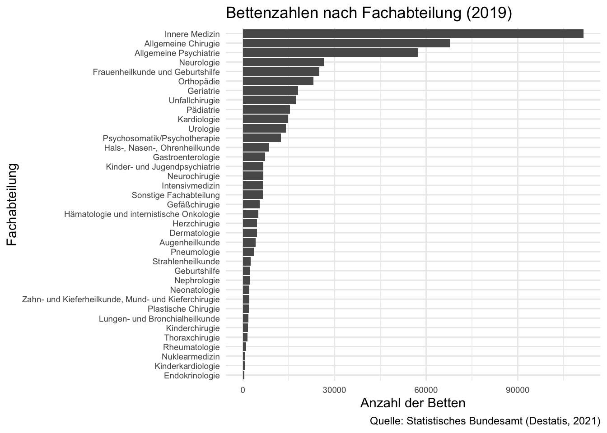
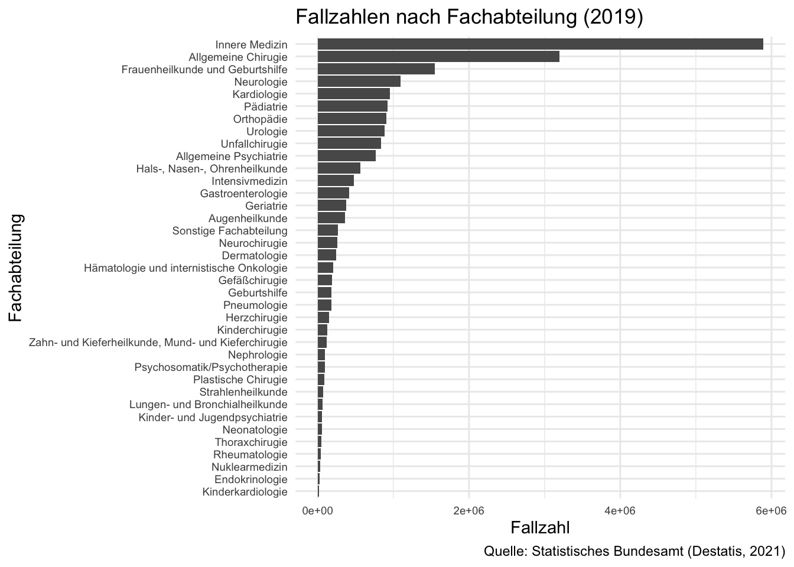
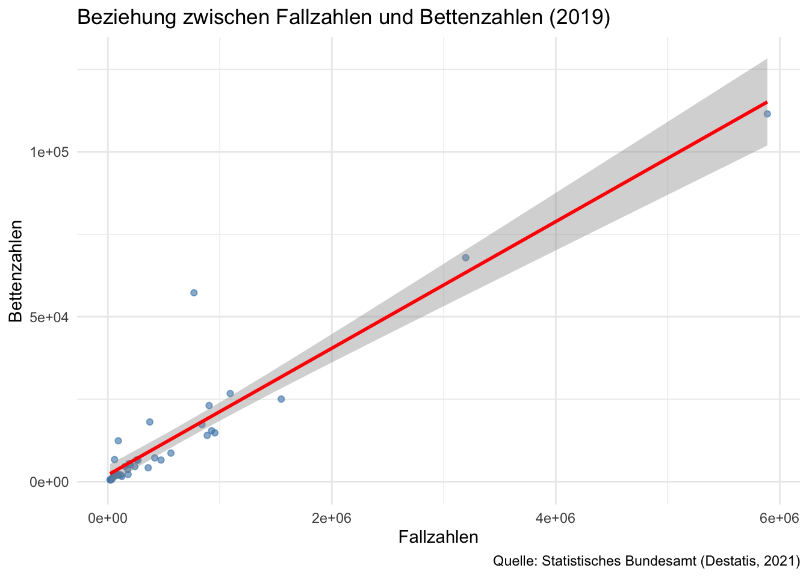
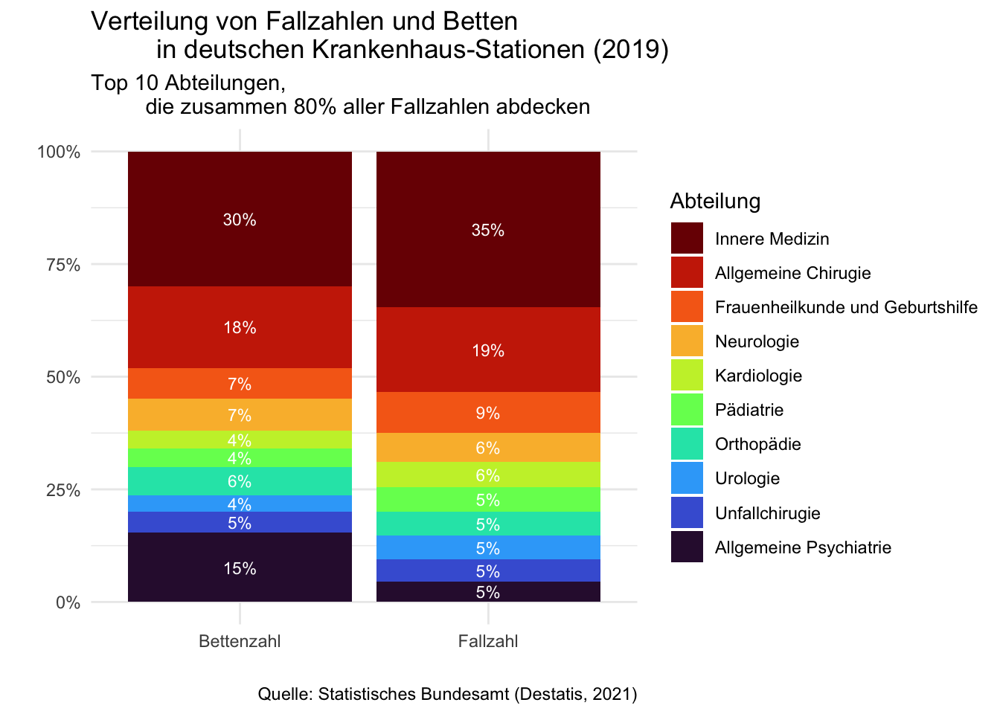
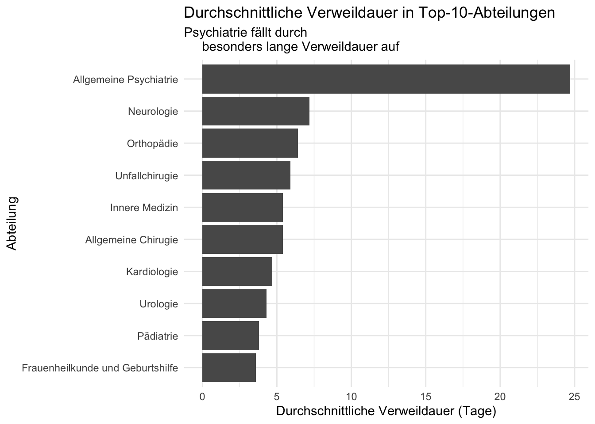
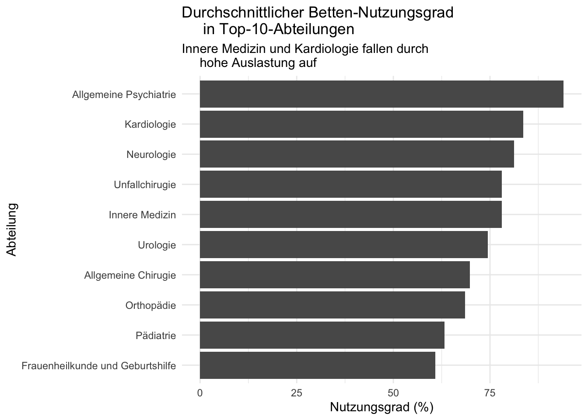

library(tidyverse)
KHR_2019 <- tribble(
~Abteilung, ~Abt_Anzahl, ~Abt_Betten,
~Nutzungsgrad, ~Fallzahl, ~Avg_Verweildauer,
"Innere Medizin", 1047, 111481, 78.1, 5889078, 5.4,
"Geriatrie", 322, 18101, 86.9, 374462, 15.3,
"Kardiologie", 206, 14800, 83.6, 955424, 4.7,
"Nephrologie", 62, 2186, 83.5, 96053, 6.9,
"Hämatologie und internistische Onkologie", 102, 5096, 79.9, 201198, 7.4,
"Endokrinologie", 18, 501, 83.3, 23432, 6.5,
"Gastroenterologie", 126, 7203, 82.5, 418259, 5.2,
"Pneumologie", 64, 3689, 79.4, 178007, 6.0,
"Rheumatologie", 33, 1096, 72.1, 38126, 7.6,
"Pädiatrie", 339, 15447, 63.2, 926516, 3.8,
"Kinderkardiologie", 23, 588, 65.0, 19087, 7.3,
"Neonatologie", 99, 2097, 72.3, 56492, 9.8,
"Kinderchirugie", 83, 1592, 63.8, 124763, 3.0,
"Lungen- und Bronchialheilkunde", 18, 1775, 69.5, 62763, 7.2,
"Allgemeine Chirugie", 1068, 67902, 69.8, 3195674, 5.4,
"Unfallchirugie", 308, 17303, 78.1, 840038, 5.9,
"Neurochirugie", 178, 6642, 77.6, 256956, 7.3,
"Gefäßchirugie", 186, 5529, 72.3, 189430, 7.7,
"Plastische Chirugie", 132, 1936, 69.2, 89349, 5.5,
"Thoraxchirugie", 56, 1546, 67.8, 50570, 7.6,
"Herzchirugie", 71, 4614, 77.5, 152524, 8.6,
"Urologie", 500, 14036, 74.4, 886904, 4.3,
"Orthopädie", 435, 23078, 68.5, 904191, 6.4,
"Frauenheilkunde und Geburtshilfe", 759, 25039, 60.8, 1548418, 3.6,
"Geburtshilfe", 86, 2205, 78.3, 180552, 3.5,
"Hals-, Nasen-, Ohrenheilkunde", 592, 8672, 60.5, 562945, 3.4,
"Augenheilkunde", 264, 4219, 65.4, 360377, 2.8,
"Neurologie", 455, 26716, 81.2, 1092503, 7.2,
"Allgemeine Psychiatrie", 394, 57269, 94.0, 769076, 24.7,
"Kinder- und Jugendpsychiatrie", 144, 6696, 88.7, 59578, 36.4,
"Psychosomatik/Psychotherapie", 275, 12394, 90.1, 93160, 43.7,
"Nuklearmedizin", 96, 724, 44.9, 36061, 3.3,
"Strahlenheilkunde", 145, 2489, 68.8, 70938, 8.8,
"Dermatologie", 109, 4575, 77.3, 240506, 5.4,
"Zahn- und Kieferheilkunde, Mund- und Kieferchirugie",
183, 2041, 65.4, 116377, 4.2,
"Intensivmedizin", 260, 6568, 77.0, 474544, 3.9,
"Sonstige Fachabteilung", 305, 6481, 73.5, 269292, 6.5)Data analysis:
Distribution of case numbers and beds
in German hospital wards (2019)
Introduction [Objective]
This analysis examines how the care capacities of German hospitals in 2019 relate to their actual workload. For this purpose, the caseloads and bed numbers of all hospital wards are compared. The year 2019 represents typical hospital care before the COVID-19 pandemic. This comparison reveals differences between available capacities and patient demand. Since such differences can be influenced by various factors, additional variables are used to further deepen the analysis.
Dataset Selection and Import
The analysis was originally intended to use the official data from the Federal Statistical Office (Destatis). However, since direct access is subject to a fee, the freely accessible figures from the hospital reports (Springer Verlag, 2022) were used instead. These refer to the official Destatis data and represent the values for 2019. Since the dataset is manageable in size, with around 40 departments, it was imported manually using the tribble() function from the tidyverse package. This allowed the dataset to be created and further processed directly in R:
Dataset Overview
Variable Description
The dataset includes the following variables:
Primary Variables for Analysis- Dept_Beds: Total number of beds per department
- Case Count: Total number of cases per department
- Dept_Number: Number of facilities with the respective department
- Utilization Rate: Average bed occupancy rate (in %)
- Avg_Length_of_Stay: Average length of stay per case (in days)/li>
head(KHR_2019)# A tibble: 6 × 6
Abteilung Abt_Anzahl Abt_Betten Nutzungsgrad Fallzahl Avg_Verweildauer
<chr> <dbl> <dbl> <dbl> <dbl> <dbl>
1 Innere Medizin 1047 111481 78.1 5889078 5.4
2 Geriatrie 322 18101 86.9 374462 15.3
3 Kardiologie 206 14800 83.6 955424 4.7
4 Nephrologie 62 2186 83.5 96053 6.9
5 Hämatologie und … 102 5096 79.9 201198 7.4
6 Endokrinologie 18 501 83.3 23432 6.5Distribution of bed numbers by department
The comparison of bed numbers reveals a strong concentration: Less than half of the 37 departments account for an estimated more than 80% of all hospital beds. This highlights the central importance of major basic specialties such as internal medicine or general surgery, while highly specialized specialties naturally have significantly smaller bed capacities.
KHR_2019 |>
mutate(Abteilung = fct_reorder(Abteilung, Abt_Betten)) |>
ggplot(aes(y = Abteilung, x = Abt_Betten)) +
geom_col() +
labs(
title = "Bettenzahlen nach Fachabteilung (2019)",
x = "Anzahl der Betten",
y = "Fachabteilung",
caption = "Quelle: Statistisches Bundesamt (Destatis, 2021)") +
theme_minimal() +
theme(axis.text.y = element_text(size = 7)) +
theme(axis.text.x = element_text(size = 7)) 
Distribution of case numbers per department
The distribution of case numbers shows a similar pattern to the number of beds: a large proportion of cases are concentrated in a few large departments. At first glance, the two variables appear closely related, although there are deviations in individual departments. This relationship is examined in the next step of the analysis using a scatterplot.
KHR_2019 |>
mutate(Abteilung = fct_reorder(Abteilung, Fallzahl)) |>
ggplot(aes(y = Abteilung, x = Fallzahl)) +
geom_col() +
labs(
title = "Fallzahlen nach Fachabteilung (2019)",
x = "Fallzahl",
y = "Fachabteilung",
caption = "Quelle: Statistisches Bundesamt (Destatis, 2021)") +
theme_minimal() +
theme(axis.text.y = element_text(size = 7)) +
theme(axis.text.x = element_text(size = 7)) 
Analysis through visualizations
Bed and case numbers: Correlation analysis
The analysis indicates a positive linear relationship between case numbers and bed numbers: Departments with higher case numbers tend to have more beds. Despite this general linearity, individual departments show deviations from the trend line. Due to the small number of 37 observations, interpretations should be cautious. Further analyses can investigate possible causes of these deviations.
ggplot(KHR_2019, aes(x = Fallzahl, y = Abt_Betten)) +
geom_point(alpha = 0.6, color = "steelblue") +
geom_smooth(method = "lm", color = "red", se = TRUE) +
labs(
title = "Beziehung zwischen Fallzahlen und Bettenzahlen (2019)",
x = "Fallzahlen",
y = "Bettenzahlen",
caption = "Quelle: Statistisches Bundesamt (Destatis, 2021)") +
theme_minimal()
Top 10 Departments:
80% of case numbers and corresponding bed numbers
Problems
The aim of the analysis was to create a direct comparison of case numbers and bed numbers in German hospital wards. The following challenges arose:- The data contains many highly specialized wards with low case numbers, which makes the visualization confusing.
- The original structure of the dataset is not suitable for a direct comparison of the two key figures.
- Case numbers and bed numbers are on very different scales, which makes normalization necessary.
These problems led to the application of Pareto logic and a restructuring of the dataset.
Pareto Logic
To reduce the number of wards displayed while still obtaining representative results, Pareto logic was applied to the caseload. Only the largest wards, which together account for 80% of the caseload, were selected. This reduced the number of wards from 37 to 10, keeping the visualization clear and highlighting the most important departments.
KHR_2019 |>
arrange(desc(Fallzahl)) |>
mutate(rel_cumsum_Fallzahl = cumsum(Fallzahl) / sum(Fallzahl)) |>
# Top 80% der Abteilungen
filter(rel_cumsum_Fallzahl <= 0.8) |>
select(Abteilung, Fallzahl, rel_cumsum_Fallzahl)# A tibble: 10 × 3
Abteilung Fallzahl rel_cumsum_Fallzahl
<chr> <dbl> <dbl>
1 Innere Medizin 5889078 0.270
2 Allgemeine Chirugie 3195674 0.417
3 Frauenheilkunde und Geburtshilfe 1548418 0.488
4 Neurologie 1092503 0.538
5 Kardiologie 955424 0.582
6 Pädiatrie 926516 0.624
7 Orthopädie 904191 0.666
8 Urologie 886904 0.706
9 Unfallchirugie 840038 0.745
10 Allgemeine Psychiatrie 769076 0.78002 Change to the dataset structure
For visualization, it is impractical to have bed numbers and case numbers in separate columns. Therefore, the two numeric variables were transformed into a numeric variable (value) and a categorical variable (key figure):-
Key figurecontains the name of the original variable (“Dept_Beds” or “Case number”). -
Valuecontains the corresponding numbers.
KHR_2019 |>
# 2 Hauptvariabel-Titel werden zu Spalten im Tibble
pivot_longer(cols = c(Abt_Betten, Fallzahl),
names_to = "Kennzahl",
values_to = "Wert") |>
select(Abteilung, Kennzahl, Wert) |>
head()# A tibble: 6 × 3
Abteilung Kennzahl Wert
<chr> <chr> <dbl>
1 Innere Medizin Abt_Betten 111481
2 Innere Medizin Fallzahl 5889078
3 Geriatrie Abt_Betten 18101
4 Geriatrie Fallzahl 374462
5 Kardiologie Abt_Betten 14800
6 Kardiologie Fallzahl 955424This transformation makes it possible to display both key figures in a single plot.
03 Relativizing the Numbers
Since the bed counts reflect five-digit values, while the case counts reflect seven-digit values, a direct comparison is not meaningful. For comparability, the values were scaled to 100% using the geom_col(position = "fill") function, so that the bars represent the relative proportions of the departments.
The Analysis
The ratios between case numbers and bed numbers can be directly compared in the form of two stacked 100% bar charts. This representation clarifies which departments are disproportionately or under-equipped with beds and provides initial indications of potential peculiarities in capacity planning.
While most departments show almost identical relative shares in both key figures, the following outliers are particularly noticeable:- General Psychiatry, where the relative number of beds is about three times higher than the relative case number.
- Internal Medicine, where the relative number of cases is about 5% higher than the number of beds.
### Laden der Viridis-Bibliothek für das Farbschema
library(viridis)
### Rechnung
KHR_2019_long <- KHR_2019 |>
# Sortiere Stationen nach Fallzahlen statt alphabetisch
mutate(Abteilung = fct_reorder(Abteilung, Fallzahl, .desc = TRUE)) |>
# Für bessere Lesbarkeit in der Visualisierung
rename(Bettenzahl = Abt_Betten) |>
# Top 80% der Abteilungen
arrange(desc(Fallzahl)) |>
mutate(rel_cumsum_Fallzahl = cumsum(Fallzahl) / sum(Fallzahl)) |>
filter(rel_cumsum_Fallzahl <= 0.8) |>
# 2 Hauptvariabel-Titel werden zu Spalten im Tibble
pivot_longer(cols = c(Bettenzahl, Fallzahl),
names_to = "Kennzahl",
values_to = "Wert") |>
# Bug-Fix: paste0() funktionierte nicht - Rechnung wurde ausgegliedert
group_by(Kennzahl) |>
mutate(Anteil = Wert / sum(Wert))
### Visualisierung
ggplot(data = KHR_2019_long, aes(
x = Kennzahl, y = Wert, fill = Abteilung)) +
# Alle Variablen skalieren unabhängig bis 100% dank position = "fill"
geom_col(position = "fill") +
# Fallzahlen separiert (skalieren unterschiedlich)
geom_text(data = filter(KHR_2019_long, Kennzahl == "Fallzahl"),
# Rechnung wurde ausgegliedert - Bug-Fix
aes(label = paste0(round(Anteil * 100, 0), "%")),
# Notwendig, damit Zahl korrekt Diagramm überlappt
position = position_fill(vjust = 0.5),
color = "white",
size = 3) +
# Bettenzahlen separiert (skalieren unterschiedlich)
geom_text(data = filter(KHR_2019_long, Kennzahl == "Bettenzahl"),
# Rechnung wurde ausgegliedert - Bug-Fix
aes(label = paste0(round(Anteil * 100, 0), "%")),
# Notwendig, damit Zahl korrekt Diagramm überlappt
position = position_fill(vjust = 0.5),
color = "white",
size = 3) +
scale_y_continuous(labels = scales::percent) +
theme_minimal() +
# Farbschema [viridis Bibliothek]
scale_fill_viridis_d(option = "turbo", direction = -1) +
labs(x = "", y = "",
title = "Verteilung von Fallzahlen und Betten
in deutschen Krankenhaus-Stationen (2019)",
subtitle = "Top 10 Abteilungen,
die zusammen 80% aller Fallzahlen abdecken",
caption = "Quelle: Statistisches Bundesamt (Destatis, 2021)")
Evaluation of the results
Why are case numbers so low in psychiatric wards?
A look at the average length of stay provides an explanation: In psychiatric wards, patients stay for an average of almost 25 days, while on most other wards the average is around 5 days. The longer occupancy leads to lower patient rotation, which explains the comparatively low case numbers. The following plot shows the average length of stay in the top 10 departments and highlights the special values of the psychiatric wards:
KHR_2019 |>
arrange(desc(Fallzahl)) |>
mutate(rel_cumsum_Fallzahl = cumsum(Fallzahl) / sum(Fallzahl)) |>
filter(rel_cumsum_Fallzahl <= 0.8) |>
mutate(Abteilung = fct_reorder(Abteilung, Avg_Verweildauer)) |>
ggplot(aes(y = Abteilung, x = Avg_Verweildauer)) +
geom_col() +
labs(
x = "Durchschnittliche Verweildauer (Tage)",
y = "Abteilung",
title = "Durchschnittliche Verweildauer in Top-10-Abteilungen",
subtitle = "Psychiatrie fällt durch
besonders lange Verweildauer auf") +
theme_minimal()
Why are caseloads so high in internal medicine?
When considering all available variables, no clear reasons for the higher caseload-to-bed ratio could be identified. Interestingly, cardiology shows a similar, but less pronounced, relationship, presumably due to the overlap between the two specialties. It is known that nurses in internal medicine and cardiology are under comparatively high work pressure. This assumption cannot be statistically substantiated with the available data, but it does provide a plausible context. The following plot shows the average utilization rate of the top 10 departments:
KHR_2019 |>
arrange(desc(Fallzahl)) |>
mutate(rel_cumsum_Fallzahl = cumsum(Fallzahl) / sum(Fallzahl)) |>
filter(rel_cumsum_Fallzahl <= 0.8) |>
mutate(Abteilung = fct_reorder(Abteilung, Nutzungsgrad)) |>
ggplot(aes(y = Abteilung, x = Nutzungsgrad)) +
geom_col() +
labs(
x = "Nutzungsgrad (%)",
y = "Abteilung",
title = "Durchschnittlicher Betten-Nutzungsgrad
in Top-10-Abteilungen",
subtitle = "Innere Medizin und Kardiologie fallen durch
hohe Auslastung auf") +
theme_minimal()
Interpretation
The high utilization rate in internal medicine could indicate a greater need for beds or staff in this area. However, specific recommendations for action cannot be derived from these data, but can be discussed in further planning.